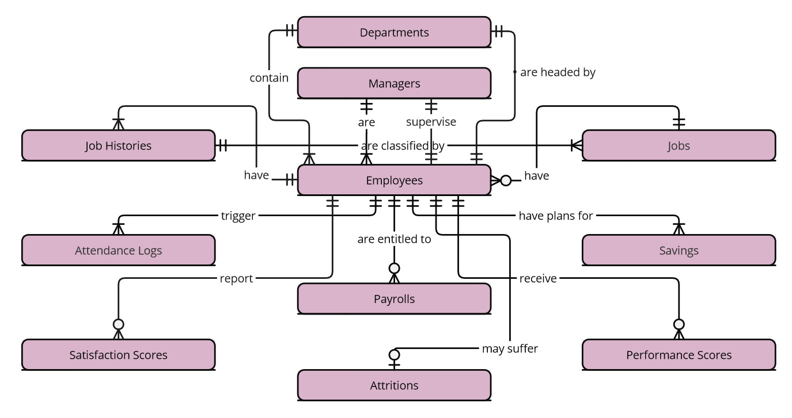

Database Design
Scope1
The Human Resources (HR) database facilitates the performance of HR department responsibilities such as recording employee attendance, calculating payroll, and conducting employee analytics.
The following entities are included in this database scope to enable the above features:
- Departments, containing information on the department name and its head
- Managers, containing information about the managers
- Employees, containing identifying information of the employees
- Jobs, containing a list of available job titles and their pay rate
- Job Histories, containing job and salary history of employees
- Attendance Logs, containing detailed information on daily employee attendance
- Savings, containing savings plan history of employees
- Payrolls, containing information on monthly employee payroll
- Satisfaction scores, containing results of employee satisfaction survey
- Performance Scores, containing reports of employee performance evaluation
- Attritions, containing details about employee attrition
The scope of the HR database excludes other HR-related responsibilities such as handling income tax and other deductions, health information, and incident reports. The information of employees recorded is only up to department heads. The database is for internal use only.
Functional Requirements
This database will support:
- CRUD operations for HR staff
- Employee-initiated create and update operations for attendance logging
- Representation of the company’s internal structure
- Tracking of daily employee attendance
- Tracking of job and salary history
- Automatic adjustment of employee savings plan
- Calculation of monthly employee payroll
- Data collection for employee analytics
This database security and access control is limited by the capabilities of SQLite. As such, only the HR staff can currently directly interface with the database. Also, the attendance logging feature requires a software extension to interface with the employees’ time ins and time outs. As stated in the previous section, the scope of the database is insufficient for the usual requirements of the end users.
Representation
Entities are represented with SQLite tables using the following schema.
Entities
The database includes the following entities:
Employees
The employees table includes:
id, which contains the unique ID for the employee as anINTEGER. Thus, this column is assigned thePRIMARY KEYconstraint.first_name, which contains the employee’s first name asTEXT. Names can be represented appropriately by aTEXTtype. ANOT NULLconstraint is applied to ensure the employee is identifiable.last_name, which contains the employee’s last name asTEXTand has theNOT NULLconstraint applied. The rationale is the same as withfirst_name.SSS, which contains the Social Security number of the employee asTEXT. ATEXTtype is chosen so a length check (10 digits) can be performed. Mathematical operations are not necessary with this column, so the values need not be treated as numbers. ANOT NULLconstraint is applied, since this is necessary information for payroll.birth_date, which contains the date of birth of the employee asNUMERIC. ANUMERICtype is appropriate for date values with the format ‘YYYY-MM-DD’. ANOT NULLconstraint is applied as proof of birth is required for employment.sex_at_birth, which contains the sex assigned at the birth of the employee. Sex assigned at birth can be appropriately represented by theTEXTtype. Currently, the local law only recognizes either ‘female’ or ‘male’ sex, so values are restricted to these two. ANOT NULLconstraint is applied since proof of birth includes this information.email, which contains the email address details of an employee asTEXT. ATEXTtype is chosen because an email address can be represented by a text string. ANOT NULLconstraint is applied since employees should be able to be contacted by other employees and the management. TheUNIQUEconstraint is applied, so contact details are unique to an employee.contact_number, which contains the SIM card number of an employee asTEXT. The reason for theTEXTtype is the same as forSSSbut with the required length of 11 digits. The rationale for theNOT NULLandUNIQUEconstraints is the same withemail.civil_status, which contains the civil status of the employee asTEXT. Civil status is appropriately represented by theTEXTtype. The valid values are restricted to: ‘single’, ‘married’, ‘widowed’, and ‘legally separated’.start_date, which contains the date the employee started working for the company asNUMERIC. TheNUMERICtype is applied for the same reason as thebirth_date. ANOT NULLconstraint is applied as you cannot be an employee without the date you started working.end_date, which, if applicable, contains the date when the employee stopped working for the company asNUMERIC. TheNUMERICtype is applied for the same reason as the other date values.job_id, which contains the ID of the job of an employee as anINTEGER. Thus, this column is assigned theFOREIGN KEYconstraint, referencing theidcolumn in thejobstable.manager_id, which contains the ID of the manager supervising the employee as anINTEGER. Thus, this column is assigned theFOREIGN KEYconstraint, referencing theidcolumn in themanagerstable.department_name, which contains the name uniquely identifying the department where the employee belongs asTEXT. Thus, this column is assigned theFOREIGN KEYconstraint, referencing thenamecolumn in thedepartmentstable. In case the department name is updated (e.g., after department merging), theON UPDATE CASCADEclause is added.
Jobs
The jobs table includes:
id, which contains the unique ID of the job as anINTEGER. Thus, this column is assigned thePRIMARY KEYconstraint.name, which contains the name of the job title asTEXT. Names consist of text strings, so theTEXTtype is appropriate. ANOT NULLconstraint is applied since a job needs a name.minimum_rate, which contains the minimum hourly pay rate for the job asNUMERIC. ANUMERICtype is assigned to be able to represent the pay rate with and without floating point. ANOT NULLconstraint is applied as the range of values for pay rate also identifies the job.maximum_rate, which contains the maximum hourly pay rate for the job asNUMERICwith aNOT NULLconstraint. The rationale for the data type and constraint is the same as`minimum_rate.
Managers
The managers table includes:
id, which contains the unique ID of the manager as anINTEGER. Thus, this column is assigned thePRIMARY KEYconstraint.employee_id, which contains the ID of the employee assigned as a manager as anINTEGER. Thus, this column is assigned theFOREIGN KEYconstraint, referencing theidcolumn in theemployeestable. AnON DELETE SET NULLclause is added, so the manager position is left vacant, not deleted, in the event the employee-manager leaves the company.start_date, which contains the date the employee started working as a manager asNUMERIC. TheNUMERICtype is appropriate for representing dates. ANOT NULLconstraint is applied as employees cannot be a manager without the date they started the role.end_date, which contains the date the employee stopped working as a manager asNUMERIC. The rationale for this type is the same asstart_date.
Departments
The departments table includes:
name, which contains the name uniquely identifying the department asTEXT. Thus, this column is assigned thePRIMARY KEYconstraint. The number of departments is relatively few, so a name is more convenient to use instead of a number as the unique ID.head_id, which contains the ID of the employee assigned as the department head as anINTEGER. Thus, this column is assigned theFOREIGN KEYconstraint, referencing theidcolumn in theemployeestable. AnON DELETE SET NULLclause is added, so the department head is left vacant, not deleted, in the event the department head employee leaves the company.start_date, which contains the date the employee started working as a department head asNUMERIC. TheNUMERICtype is appropriate for representing dates. ANOT NULLconstraint is applied as an employee cannot be a department head without a date they started the role.end_date, which contains the date the employee stopped working as a department head asNUMERIC. The rationale for this type is the same asstart_date.
Job Histories
The job_histories table includes:
employee_id, which contains the ID of the employee with a job title and/or pay change as anINTEGER. Thus, this column is assigned theFOREIGN KEYconstraint, referencing theidcolumn in theemployeetable. AnON DELETE CASCADEclause is added, so the job histories of an employee will also be deleted when the employee is deleted from theemployeestable. Disposal is conducted after the legally mandated employee retention time is up.job_id, which contains the ID of the employee’s job as anINTEGER. Thus, this column is assigned theFOREIGN KEYconstraint, referencing theidcolumn in thejobstable.start_date, which contains the date when the employee starts with the new job title and/or pay asNUMERIC. ANUMERICtype is appropriate for storing date values. Theemployee_idandstart_datecombined can uniquely identify the job histories and thus are assigned thePRIMARY KEYconstraint.hourly_rate, which contains the new hourly pay rate of the employee asNUMERIC. ANUMERICtype can both represent the pay rate with and without a floating point. ANOT NULLconstraint is applied because a job requires a pay rate. The pay rate is also checked if it satisfies the minimum pay rate of 75.raise/cut, which contains, if applicable, the calculated pay raise/cut from the previous recorded job history asNUMERICThe rationale for theNUMERICtype is the same as inhourly_rate.
Attendance Logs
The attendance_logs table includes:
employee_id, which contains the ID of the employee whose attendance is being recorded as anINTEGER. Thus, this column is assigned theFOREIGN KEYconstraint, referencing theidcolumn in theemployeetable. AnON DELETE CASCADEclause is added, so the attendance logs of an employee will also be deleted when the employee is deleted from theemployeestable. Disposal is conducted after the legally mandated employee retention time is up.date, which contains the date when the attendance is being recorded asNUMERIC. ANUMERICtype is appropriate for storing date values. Theemployee_idanddatecombined can uniquely identify the record for attendance and thus are assigned thePRIMARY KEYconstraint.time_in, which contains the time the employee clocked in for the day asNUMERIC. ANUMERICtype is appropriate for storing date and time values.time_out, which contains the time the employee clocked out for the day asNUMERIC. The rationale for theNUMERICtype is the same astime_out.hours_worked, which contains the calculated hours worked by the employee asINTEGER. AnINTEGERtype is assigned as this adequately represents the required specificity for the values. The value is also checked if it is under the mandated maximum of 12 hours worked.overtime_hours, which contains the calculated hours worked for overtime by the employee asINTEGER. The rationale for theINTEGERtype is the same ashours_worked.tardy, which contains the classification of whether the employee timed in late or not as anINTEGER. AnINTEGERtype is assigned to represent either 0 as not late or 1 as late. Only these two values are considered valid values.type, which contains the classification of the shift type of the employee based on the hours worked as aTEXT. ATEXTtype is assigned to represent the following valid values: ‘undertime’, ‘normal’, ‘overtime’, and ’paid leave`
Savings
The savings table includes:
date, which contains the date the employee Social Security System (SSS) savings plan is being recorded asNUMERIC. ANUMERICtype is appropriate for storing date values. Thedateandemployee_idcombined can uniquely identify the record of a savings plan and thus are assigned thePRIMARY KEYconstraint.employee_id, which contains the ID of the employee whose savings plan is being recorded as anINTEGER. Thus, this column is assigned theFOREIGN KEYconstraint, referencing theidcolumn in theemployeetable. AnON DELETE CASCADEclause is added, so the recorded savings plan of an employee will also be deleted when the employee is deleted from theemployeestable. Disposal is conducted after the legally mandated employee retention time is up.salary_change, which contains the calculated salary change of an employee based on the latest job history record asNUMERIC. ANUMERICtype can represent the salary change with and without a floating point.previous_rate, which contains, if applicable, the previous savings rate of the employee asNUMERIC. ANUMERICtype is adequate for representing numbers with decimal points.adjusted_rate, which contains the calculated employee savings rate adjusted based on thesalary_changeasNUMERIC. The rationale for theNUMERICtype is the same asprevious_rate.
Payrolls
The payrolls table includes:
date, which contains the date an employee’s monthly payroll is being recorded asNUMERIC. ANUMERICtype is appropriate for storing date values. Thedateandemployee_idcombined can uniquely identify the record of a payroll and thus are assigned thePRIMARY KEYconstraint.employee_id, which contains the ID of the employee whose payroll is being recorded as anINTEGER. Thus, this column is assigned theFOREIGN KEYconstraint, referencing theidcolumn in theemployeetable. AnON DELETE CASCADEclause is added, so the recorded payroll of an employee will also be deleted when the employee is deleted from theemployeestable. Disposal is conducted after the legally mandated employee retention time is up.hourly_rate, which contains the hourly pay rate of the employee based on the latest job history record asNUMERIC. ANUMERICtype can represent the pay rate with and without a floating point. ANOT NULLconstraint is applied because payroll cannot be calculated without a pay rate.regular_hours, which contains the calculated hours worked of the employee based on attendance logs asINTEGER. AnINTEGERtype is assigned as this adequately represents the required specificity for the values. ANOT NULLconstraint is applied because payroll cannot be calculated without hours worked.overtime_hours, which contains the calculated hours worked of the employee for overtime based on attendance logs asINTEGER. The rationale for theINTEGERtype is the same asregular_hours.paid_leave, which contains a count of the paid leaves used by the employee based on attendance logs asINTEGER. TheINTEGERadequately represents a count of values.gross_pay, which contains the calculated gross pay of an employee asNUMERIC. ANUMERICtype can represent the gross pay with decimal values.SSS_deduction, which contains the calculated SSS deduction to the gross pay of an employee (based on their latest savings rate) asNUMERIC. ANUMERICtype can represent the SSS deduction with decimal values.taxable_pay, which contains the calculated taxable pay of an employee after the SSS deduction asNUMERIC. ANUMERICtype can represent the taxable pay with decimal values.
Satisfaction Scores
The satisfaction_scores table includes:
date, which contains the date the employee’s satisfaction scores are being recorded asNUMERIC. ANUMERICtype is appropriate for storing date values. Thedateandemployee_idcombined can uniquely identify the record of satisfaction scores and thus are assigned thePRIMARY KEYconstraint.employee_id, which contains the ID of the employee whose satisfaction scores are being recorded as anINTEGER. Thus, this column is assigned theFOREIGN KEYconstraint, referencing theidcolumn in theemployeetable. AnON DELETE CASCADEclause is added, so the recorded satisfaction scores of an employee will also be deleted when the employee is deleted from theemployeestable. Disposal is conducted after the legally mandated employee retention time is up.compensation_score, which contains the response to a Likert scale survey of the employee rating compensation asINTEGER. The valid response to the survey ranges from 1 to 5 (very dissatisfied to very satisfied), so anINTEGERtype is appropriate.workload_score, which contains the response to a Likert scale survey of the employee rating workload asINTEGER. The valid response to the survey ranges from 1 to 5 (very dissatisfied to very satisfied), so anINTEGERtype is appropriate.opportunity_score, which contains the response to a Likert scale survey of the employee rating available opportunity asINTEGER. The valid response to the survey ranges from 1 to 5 (very dissatisfied to very satisfied), so anINTEGERtype is appropriate.environment_score, which contains the response to a Likert scale survey of the employee rating the working environment asINTEGER. The valid response to the survey ranges from 1 to 5 (very dissatisfied to very satisfied), so anINTEGERtype is appropriate.leadership_score, which contains the response to a Likert scale survey of the employee rating company leadership asINTEGER. The valid response to the survey ranges from 1 to 5 (very dissatisfied to very satisfied), so anINTEGERtype is appropriate.teamwork_score, which contains the response to a Likert scale survey of the employee rating teamwork asINTEGER. The valid response to the survey ranges from 1 to 5 (very dissatisfied to very satisfied), so anINTEGERtype is appropriate.average_score, which contains the calculated average from the Likert scale survey of employee satisfaction asNUMERIC. TheNUMERICtype can represent the average satisfaction score with and without a floating point.
Performance Scores
The performance_scores table includes:
date, which contains the date the employee’s performance scores, as evaluated by their immediate superior, are being recorded asNUMERIC. ANUMERICtype is appropriate for storing date values. Thedateandemployee_idcombined can uniquely identify the record of performance scores and thus are assigned thePRIMARY KEYconstraint.employee_id, which contains the ID of the employee whose performance scores are being recorded as anINTEGER. Thus, this column is assigned theFOREIGN KEYconstraint, referencing theidcolumn in theemployeetable. AnON DELETE CASCADEclause is added, so the recorded performance scores of an employee will also be deleted when the employee is deleted from theemployeestable. Disposal is conducted after the legally mandated employee retention time is up.productivity_score, which contains the response to a Likert scale survey of the immediate superior evaluating an employee’s productivity asINTEGER. The valid response to the survey ranges from 1 to 5 (very dissatisfied to very satisfied), so anINTEGERtype is appropriate.quality_score, which contains the response to a Likert scale survey of the immediate superior evaluating an employee’s work quality asINTEGER. The valid response to the survey ranges from 1 to 5 (very dissatisfied to very satisfied), and so anINTEGERtype is appropriate.teamwork_score, which contains the response to a Likert scale survey of the immediate superior evaluating an employee’s teamwork skills asINTEGER. The valid response to the survey ranges from 1 to 5 (very dissatisfied to very satisfied), so anINTEGERtype is appropriate.initiative_score, which contains the response to a Likert scale survey of the immediate superior evaluating an employee’s initiative asINTEGER. The valid response to the survey ranges from 1 to 5 (very dissatisfied to very satisfied), so anINTEGERtype is appropriate.leadership_score, which contains the response to a Likert scale survey of the immediate superior evaluating an employee’s leadership skills asINTEGER. The valid response to the survey ranges from 1 to 5 (very dissatisfied to very satisfied), so anINTEGERtype is appropriate.average_score, which contains the calculated average from the Likert scale survey of the employee performance asNUMERIC. TheNUMERICtype can represent the average performance score with and without a floating point.
Attritions
The attritions table includes:
employee_id, which contains the ID of the employee whose attrition is being recorded as anINTEGER. Thus, this column is assigned theFOREIGN KEYconstraint, referencing theidcolumn in theemployeetable. AnON DELETE CASCADEclause is added, so the attrition record of an employee will also be deleted when the employee is deleted from theemployeestable. Disposal is conducted after the legally mandated employee retention time is up.start_date, which contains the starting date of an employee in the company asNUMERIC. ANUMERICtype is appropriate for storing date values. ANOT NULLconstraint is applied as an employee cannot experience attrition without starting as an employee.end_date, which contains the ending date of an employee in the company asNUMERIC. ANUMERICtype is appropriate for storing date values. Theemployee_idandend_datecombined can uniquely identify the record for attrition and thus are assigned thePRIMARY KEYconstraint.deletion_date, which contains the date until when the employee data is legally mandated to be retained asNUMERIC. ANUMERICtype is appropriate for storing date values. The required retention is 3 years after the employee’send_date.type, which contains the type of employee attrition asTEXT. The valid value can only be between “voluntary” and “involuntary”, which can be represented by aTEXTdata type.reasons, which contains the detailed reason for employee attrition asTEXT. ATEXTtype is appropriate for storing detailed textual descriptions.
Relationships
The below entity relationship diagram describes the relationships among the entities in the database. The employees table are referenced by all the other tables.

As detailed by the diagram:
- The
employeestable is referenced by all the other tables. This database is fundamentally a database about employees. - Each department is headed by one employee, and each department contains one or many employees.
- One or many employees are supervised by one manager, who is themselves an employee.
- An employee has to have a job [title] but only one. On the other hand, a job [title] can be possessed by 0 (e.g., recent job vacancy) to many employees.
- As employees possess a job [title], they also have job histories. As employees, throughout their tenure, experience job title changes and pay changes, employees can have one or many job history entries. On the other hand, each job history entry can be related only to one employee since employees have separate job paths.
- Employees, when they time in or time out for the day at work, trigger the recording of their attendance logs. Employees generate one to many attendance logs throughout their tenure at the company. On the other hand, each attendance log can be related only to one employee.
- Employers are mandated by local law to contribute to each employee’s social insurance program savings plan. Thus, each employee has to have one savings [plan]. For this company, the changes in job history are tied to the savings plan, so employees are expected to have one or many savings [plan] changes. On the other hand, each savings [plan] entry is specific only to one employee.
- Employees are entitled to 0 or many payrolls throughout their tenure at the company. Before they finish their first month, employees cannot yet receive payroll. On the other hand, each payroll entry is specific only to one employee.
- Employees report 0 to many satisfaction scores throughout their tenure at the company. Before they finish their first month, employees cannot be expected to provide feedback to the company. On the other hand, each satisfaction score entry is specific only to one employee.
- Employees receive performance scores throughout their tenure at the company. Before they finish their first month, employees cannot be adequately evaluated for their work. On the other hand, each satisfaction score entry is specific only to one employee.
- Employees may suffer employee attrition. An employee either has (1) or has not (0) experienced attrition. On the other hand, each employee attrition entry is specific only to one employee.
Optimizations
As shown in queries.sql, the most frequent operations for the database involve INSERT and UPDATE queries, which can be slowed down by having indexes. Furthermore, the queries are overall relatively infrequent, and the memory savings are more important than the minor time savings. For this reason, indexes are only created for the first_name and last_name columns to quickly identify the employee name from their id. In this database, more attention is given to creating triggers and views to save time from writing complex queries over and over.
The following are the triggers created:
- The
tardinesstrigger determines whether the employee timed in at least 30 minutes late, and it updates thetardycolumn in theattendance_logstable to reflect this. - The
shift_endtrigger determines, upon time out, the number of hours the employee worked, whether the shift falls under the type undertime, normal, or overtime, and the number of hours spent in overtime. This updates thehours_worked,type, andovertime_hourscolumns in theattendance_logstable. - The
new_jobtrigger updates thejob_idin theemployeestable to reflect the changes in thejob_historiestable. This also works with thesavings_adjustmenttrigger by querying and inserting the information for thedate,employee_id,salary_change, andprevious_ratecolumns in thesavingstable. - The
savings_adjustmenttrigger will update theadjusted_ratein thesavingstable based on thesalary_changeandprevious_rateof savings. This method of automatically updating the savings rate when the employee’s salary changes is based on the work of Richard Thaler and Shlomo Benartzi, the Save More Tomorrow™ program. This encourages an increase in employee savings. - The
payroll_calculationtrigger will calculate and update thegross_pay, theSSS_deduction(savings), and thetaxable_paycolumns in thepayrollstable based on anINSERTquery. TheINSERTquery collects the requisite information including the hourly pay rate, the regular and overtime hours worked, and the count of paid leaves. - The
performance_averagetrigger will calculate and update theaverage_scorecolumn in theperformance_scorestable based on theINSERTquery containing the performance score metrics. - The
satisfaction_averagetrigger will calculate and update theaverage_scorecolumn in thesatisfaction_scorestable based on theINSERTquery containing the satisfaction score metrics. - The
soft_delete_employeestrigger will update theend_datecolumn for employees with anidadded in theattritionstable.
The following are the views created:
- The
monthly_attendanceview creates a monthly overview of each employee’s attendance logs. This includes a count of types of shifts (undertime, normal, overtime), absences, paid leaves, and tardiness. - The
manager_1view creates a sample view for managers showing the satisfaction scores of the employees they supervise. Theemployee_idis hidden to promote honest feedback and to prevent retaliation. The view is for the current year average only. - The
employee_evaluationview creates an overview of the average performance evaluation scores of employees. This allows upper management to see employees who may need training or employees who may be considered for a raise. This report is for the current year’s average only. - The
attrition_analysisview prepares the relevant employee data for an attrition analysis such as attrition status and months of tenure. This makes it easy to export the data as a CSV file for statistical analysis.
Limitations
The current schema assumes you have separate software and hardware that interface with the employee’s time-in and time-out actions. Also, the employee data represented is not comprehensive. It does not include other necessary information for the functioning of the human relations department like health information and incident reports. It is also unable to represent the data of upper management employees, whose positions are above the department heads. The database is limited for HR staff use due to the limitations in the possible security and access control with SQLite. Other end users need to request the information through the HR staff.
Footnotes
Watch a video overview here: https://youtu.be/MjUMs09HnMg↩︎